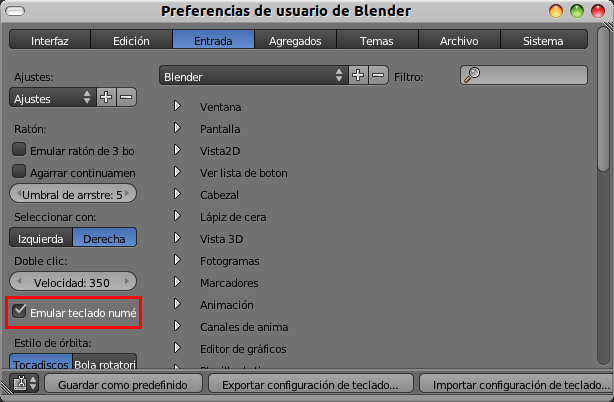
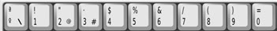
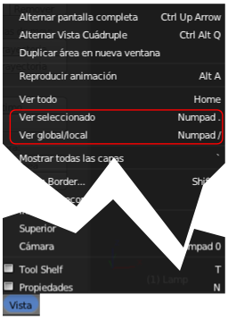

Sin teclado numérico
No es nada recomendable encontrarse ante esta situación. Blender permite la opción pero debemos tener en cuenta que no ha sido diseñado para trabajar de forma confortable si carecemos de teclado numérico.
Para adaptar Blender a esta situación nos dirigimos a Archivo/Preferencias de usuario y activamos, en la sección Entrada, Emular teclado numérico (no olvidaremos guardar las preferencias; ya sabemos que debemos hacer este cambio con Blender recién abierto).
A partir de ahora:
- Los números superiores del teclado hacen las funciones de los citados "NumPad".

- Las funciones "NumPad Supr" y "NumPad /" deben hacerse a través del menú Vista.

¿Por qué crees que en Blender se le da tanta importancia a los atajos de teclado?